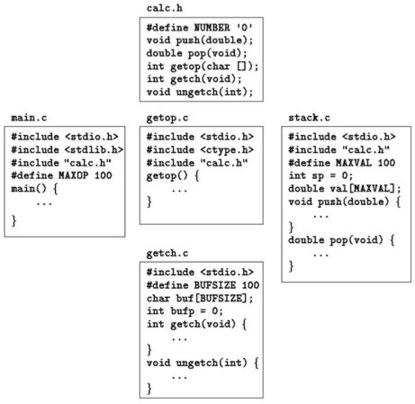

# Einführung in die Programmierung in C
-----------------------------------------------------
# Informationen
### Allgemein
* Alain M. Lafon
* E-Mail: aml@panter.ch
* Kurs ist _fakultativ_
* Folien und Code
* http://edu.panter.ch/BetriebssystemeFh2012
* Literatur: Kernighan & Ritchie - The C Programming language
### Berufserfahrung
* 1 Jahr Campus Ambassador - Sun Microsystems
* 3 Jahre Python, Ruby, (C#) - Swiss Post Solutions AG
* 2 Jahr Ruby on Rails - Panter LLC
* 1 Jahr HSZ-T/ZHAW (C, Webprogrammieren)
### Besprechung Ablauf
-----------------------------------------------------
# Historische Einbettung
* Entwickelt zw. 1969 und 1973 von Dennis Ritchie @ Bell Labs
* K&R C - erste Auflage 1978, zweite Auflage 1988
* Wurde entwickelt, um Unix portabel zu machen (PDP-7)

-----------------------------------------------------
# Es ist 2012, warum noch C? (1)
* Populäre Sprachen:
* Java
* .NET
* Ruby
* Python
* PHP
* Javascript
-----------------------------------------------------
# Es ist 2012, warum noch C? (2)
* Der Box Plot Zeigt wie viel mal langsamer die schnellste Implementierung zehn
verschiedener Algorithmen relativ zur schnellsten Sprache(hier C) ist
([Alioth Shootout](http://shootout.alioth.debian.org/u32/which-programming-languages-are-fastest.php?gcc=on&java=on&csharp=on&v8=on&yarv=on&php=on&python3=on&calc=chart))

-----------------------------------------------------
# Es ist 2012, warum noch C? (3)
## SPEED!
* Demo Geschwindigkeitsunterschied C <-> Ruby
###Fibonacci Funktion:
 
-----------------------------------------------------
# Es ist 2012, warum noch C? (4)
* Nähe zur Hardware
* Betriebssysteme [Unix/Linux, Windows (C/C++/ASM), OSX(ObjectiveC)]
* Gut für Neueinsteiger:
* Wenig Syntax
* Fördert Verständnis
* Implementierung anderer Sprachen
* CRuby, CPyton, PHP, .NET (C/C++), JS V8 (C++), Sun JVM (C++)
* Neu: Google Chrome Native Client ([NaCl](http://code.google.com/p/nativeclient/))
* Grundlage für C++, ObjC, (Java..)
-----------------------------------------------------
# Hands on!
# System bereit?
* Compiler
* Unix(Linux, OSX): gcc
* Windows: ([MinGW](http://www.mingw.org/))
* Editor
-----------------------------------------------------
# Hallo Welt
#include <stdio.h>
int main() {
printf("Hallo HSZ-T\n");
}
hallo\_hszt.c
-----------------------------------------------------
# Grad Fahrenheit in Celius (1)
## Erste Lernziele
* Variable
* Deklaration / Initialisierung
* Schleife
* Bedingung
## Algorithmus zur Umrechnung
###( TFahrenheit - 32 ) × 5 / 9

-----------------------------------------------------
# Grad Fahrenheit in Celius (2)
#include <stdio.h>
/* print Fahrenheit-Celsius table for fahr = 0, 20, ..., 300 */
int main() {
int fahr, celsius;
int lower, upper, step;
lower = 0; /* lower limit of temperature scale */
upper = 300; /* upper limit */
step = 20; /* step size */
fahr = lower;
while (fahr <= upper) {
celsius = 5 * (fahr-32) / 9;
printf("%d\t%d\n", fahr, celsius);
fahr = fahr + step;
}
}
fahrenheit2celsius.c
-----------------------------------------------------
# Exkurs Datentypen
* Grösse der Datentypen ist abhängig von der Platform (limits.h)
* Bsp OSX: /usr/include/i386/limits.h
char
ein Byte
(-128 / 128)
short
short Integer
(-32,768 / 32,767)
int
Integer
(−2,147,483,648 / 2,147,483,647)
long
long Integer
32bit: (−2,147,483,648 / 2,147,483,647)
64bit: (−9,223,372,036,854,775,808 / 9,223,372,036,854,775,807)
float
floating point
(≤1E−37 / ≥1E+37))
-----------------------------------------------------
# Zurück zu Fahrenheit2Celsius
* Bisher Berechnung auf Ganzzahlen (Integer)
* Änderung der Berechnung auf Gleitkomma (Float)
* Deklaration (int -> float)
* Berechnung und Genauigkeit
celsius = (5.0/9.0) * (fahrenheit-32.0);
printf("%3.0f %6.1f\n", fahrenheit, celsius);
fahrenheit2celsius\_float.c
-----------------------------------------------------
# For Schleifen
#include <stdio.h>
/* print Fahrenheit-Celsius table */
int main() {
int fahr;
for (fahr = 0; fahr <= 300; fahr = fahr + 20)
printf("%3d %6.1f\n", fahr, (5.0/9.0)*(fahr-32));
}
fahrenheit2celsius\_for\_loop.c
## Selbes Ergebnis, aber bedeutend weniger Code.
* Weniger Variable
* Berechnung jetzt inline in prinft
-----------------------------------------------------
# Konstanten
#include <stdio.h>
#define LOWER 0
#define UPPER 300
#define STEP 20
/* print Fahrenheit-Celsius table */
int main() {
int fahr;
for (fahr = LOWER; fahr <= UPPER; fahr = fahr + STEP)
printf("%3d %6.1f\n", fahr, (5.0/9.0)*(fahr-32));
}
* Besserer Code: Keine 'magic numbers'
* Präprozessor
* ersetzt Text
* Konstanten != Variable
* Keine Deklaration
-----------------------------------------------------
# Ein- und Ausgabe(1)
#include <stdio.h>
/* count characters in input; 1st version */
int main() {
long nc;
nc = 0;
while (getchar() != EOF)
nc++;
printf("%ld\n", nc);
}
character\_counting_1.c
* getchar()
* ++ Operator
* gleichbedeutend zu nc = nc + 1
* Präfix und Postfix, ebenso --
* EOF
-----------------------------------------------------
# Ein- und Ausgabe(2)
# Alternative Implementierung
#include <stdio.h>
/* count characters in input; 2nd version */
int main() {
double nc;
for (nc = 0; getchar() != EOF; ++nc)
;
printf("%.0f\n", nc);
}
character\_counting\_2.c
###Besondere Variante der for-Schleife
* Kein Code im Rumpf der Schleife
* Das Semikolon in der Zeile steht für die minimale Anforderung an Rumpf
* 'null' Statement
-----------------------------------------------------
# Ein- und Ausgabe(3)
#include <stdio.h>
/* count lines in input */
int main() {
int c, nl;
nl = 0;
while ((c = getchar()) != EOF)
if (c == '\n')
nl++;
printf("%d\n", nl);
}
line\_counting.c
* == (Equality Operator)
* Achtung: = ungleich ==
* Einfache Anführungszeichen ('') bedeuten 'character constants'
* '\n' (Escape sequence für Newline)
-----------------------------------------------------
# Arrays(1)
# Häufigkeitszählung von Ziffern(1)
#include <stdio.h>
// count digits
int main() {
int i, c;
int ndigit[10];
// Initializing array to count of zero
for (i = 0; i < 10; ++i)
ndigit[i] = 0;
// Actual count
while ((c = getchar()) != EOF)
if (c >= '0' && c <= '9')
++ndigit[c-'0'];
// Print result
printf("Digits = ");
for (i = 0; i < 10; ++i)
printf(" %d", ndigit[i]);
}
-----------------------------------------------------
# Arrays(2)
# Häufigkeitszählung von Ziffern(2)
* Arrays beginnen in C mit dem Index 0
* Indexierung: ndigit[0]
* Trick bei der Indexierung von ++ndigit[c-'0']
* Datentyp char ist nur ein kleiner Integer
* getchar() liefert [ASCII-Wert](http://en.wikipedia.org/wiki/ASCII) des Characters (48 fuer '0')
* int und char sind arithmetisch vergleichbar
* c-'0' gibt in unserem Fall immer einen Wert zw. 0..9
-----------------------------------------------------
# Funktionen(1)
* Bisher nur integrierte Funktionen genutzt:
* printf, getchar
Eigene Funktion:
return-type function-name(parameter declarations, if any) {
declarations
statements
}
-----------------------------------------------------
# Funktionen(2)
#include <stdio.h>
// function prototype
int power(int m, int n);
// test power function
int main() {
int i;
for (i = 0; i < 10; i++)
printf("%d %d %d\n", i, power(2, i), power(-3, i));
// return value for the OS
return 0;
}
// power: raise base to the n-th power; n >= 0
int power(int base, int n) {
int i, p;
p = 1;
for (i = 1; i <= n; i++)
p = p * base;
// return value for the calling function
return p;
}
functions\_1.c
-----------------------------------------------------
# Funktionen(3)
### Warum Funktionen?
* Lesbarkeit
* Wiederverwendbarkeit
* Wartbarkeit
### Speziell in C
* Funktionen können in beliebiger Reihenfolge deklariert und definiert werden
* in einem oder mehreren Quelldateien
* Variablen einer Funktion sind nur lokal sichtbar
* **return** ist an jeder Stelle erlaubt
* auch in main
-----------------------------------------------------
# Funktionen(4)
### Argumente
* Call by value vs. Call by reference
* Beispiel: Siehe power() in functions\_1.c
* n ist eine temporaere Variable
* Ausnahme: Arrays
* Adresse zum Array wird übergeben
-----------------------------------------------------
# Funktionen(5)
### Call by reference (Arrays)
#include <stdio.h>
void add_one(int []);
// Call by reference for arrays
int main() {
int digit[] = {1};
printf("Before call: %d\n", digit[0]);
add_one(digit);
printf("After call: %d\n", digit[0]);
}
// tmp[] supposedly should be local, but is it?
void add_one(int tmp[]) {
tmp[0]++;
}
call\_by\_reference.c
* Neu: type void
* Vergleiche mit call by value
-----------------------------------------------------
# Strings(1)
#include <stdio.h>
#include <string.h>
int main() {
char str_1[] = "ab\n";
char str_2[] = {'a', 'b', '\n', '\0'};
printf("str_1: %s", str_1);
printf("str_2: %s", str_2);
printf("Equality test: %i\n", (str_1 == str_2));
printf("Equality test: %i\n", strcmp(str_1, str_2));
}
strings.c
-----------------------------------------------------
# Strings(2)
* C kennt keinen Datentyp String
* char Arrays werden als String Konstanten gehandhabt
* '\0' terminiert
* Hilfs-Funktionen
* strcpy, strcmp, strlen, ...
* printf formatter: %s
-----------------------------------------------------
# Operatoren
### Arithmetisch
* +, -, *, /
* Modulus % (nicht definiert für float, double)
### Relational und Logisch
* > >= < <=
* == !=
-----------------------------------------------------
# Datentypen Konversion
* Operatoren mit Operanden unterschiedlichen Typs konvertieren automatisch in den generelleren Typ
* 2 / 1.2f wird zu float
* manuelle Konversion durch 'casting'
int x = 2;
float y = 3.0f;
printf("%f\n", ((float)x/y));
-----------------------------------------------------
# Bitweise Operatoren für char, short, int und long
* & bitweise AND
* | bitweise Inklusiv-Oder
* ^ bitweise Exclusiv-Oder
* << links schieben
* >> rechts schieben
* ~ Komplement
##Beispiel:
x << 2
* Ist äquivalent zu 2^2, da der Wert von x um zwei Positionen verschoben wird.
-----------------------------------------------------
# Bedingte Ausdrücke
if (a > b)
z = a;
else
z = b;
## Errechnet das Maximum von a und b.
###Kürzer:
z = ( a > b ) ? a : b;
###Allgemein:
expr1 ? expr2 : expr3
-----------------------------------------------------
# Tools
### Make(1)
GCC=/usr/bin/gcc
test: foo.o
$(GCC) -o test foo.o bar.o
foo.o: bar.o
$(GCC) -c foo.c
bar.o:
$(GCC) -c bar.c
clean:
rm -f test foo.o bar.o core
Makefile
-----------------------------------------------------
# Tools
### Make(2)
* Automatisierung von Arbeitsschritten
* Auflösen von Abhängigkeiten
* Kompilieren
Prinzip:
* Definition von Targets und Abhängigkeiten
* Befehl um, das Target zu kompilieren
-----------------------------------------------------
# Konstanten (1)
* Integer Konstante: 123456
* Long Konstante: 123456L
* Demo Überläufe
* Unsigned Konstante: 123456u
* Unsigned Long Konstante: 123456ul
* Notationen
* Oktal: 0123456 (führende Null)
* Hexadezimal: 0x123456
* Oktale und hexadzimale Konstanten können ebenfalls unsigned und long sein
* Zeichen Konstanten sind Integer
* geschrieben in einfachen Anführungszeichen ('a')
* Alternativ '\0122' und '\xhh'
-----------------------------------------------------
# Konstanten (2)
### Escape Sequences
|------------|--------------|------------|--------------|
| \a | alert/bell | \v | vert. tab |
| \b | backspace | \\ | backslash |
| \f | formfeed | \' | single quote |
| \n | newline | \" | double quote |
| \r | carriage ret | \000 | oktal num |
| \t | horiz. tab | \xff | hex num |
|------------|--------------|------------|--------------|
Die Konstante '\0' hat den Wert 0.
-----------------------------------------------------
# Konstanten (3)
### Strings
* String Konstante: "Ich bin ein String"
* "" (leerer String; Anführungszeichen sind nicht Teil des Strings)
* "hallo " "hsz-t" äquivalent zu "hallo hsz-t"
* Strings können zur Kompilierzeit konkateniert werden
* Sinnvoll, um lange Zeilen umzubrechen
* String Funktionen definiert in string.h
* man 3 string
* /usr/include
* 'x' ungleich "x" (Integer vs. Zeichen-Array + '\0')
-----------------------------------------------------
# Konstanten (4)
### Enumeration
enum boolean { NO, YES };
* Der erste Wert eines enum hat den Wert 0, der nächste 1 und so weiter
* Es sei denn es werden explizite Werte definiert.
enum escapes { BELL = '\a', BACKSPACE = '\b' };
* Namen in unterschiedlichen enumerations müssen eindeutig sein.
* Die Werte innerhalb eines enums müssen nicht eindeutig sein.
* Enumerations bieten eine komfortablen Möglichkeit, um Konstanten mit Namen zu
definieren - eine gute Alternative zu #define.
* Vorteile enum vs. #define:
* Variable können vom Compiler geprüft zu werden
* Debugger können symbolische Konstanten anzeigen
-----------------------------------------------------
# Deklaration
* Variablen müssen vor Nutzen deklariert werden
* Deklarationen spezifizieren Typ und einen oder mehrere Variablennamen
* Variablen können bei Deklaration initialisiert werden
* Variablen in Blöcken und Funktionen können mit Ausdrücken initialisiert werden
* Kennzeichner 'const' bei Deklaration für nicht änderbare Variableninhalte
-----------------------------------------------------
# Kontrollfluss (1)
## If-Else (1)
###Formale Syntax:
if (expression)
statement_1
else
statement_2
###Äquivalent
if (expression)
if (expression != 0)
-----------------------------------------------------
# Kontrollfluss (2)
# If-Else (2)
##Assoziation
if (n > 0)
if (a > b)
z = a;
else
z = b;
###vs
if (n > 0) {
if (a > b)
z = a;
} else
z = b;
-----------------------------------------------------
# Kontrollfluss (3)
### Else-If
if (expression)
statement
else if (expression)
statement
else if (expression)
statement
else
statement
* 'else' ist optional. Kann genutzt werden, um generellen Fehler zu beschreiben.
-----------------------------------------------------
# Kontrollfluss (4)
### Switch(1)
switch (expression) {
case const-expr: statements
case const-expr: statements
default: statements
}
* 'case' Label enthalten Integer Konstanten
* 'default' Label wird ausgeführt falls keine andere Bedingung zutrifft
* 'default' ist optional
* Evaluation von statements unter 'case' wird mit 'break' beendet
## Altes Beispiel - Zählen von Ziffern:
switch (c) {
case '0': case '1': case '2':
ndigit[c-'0']++;
break;
case ' ':
case '\n':
case '\t':
white_space_count++
break;
}
-----------------------------------------------------
# Kontrollfluss (5)
### Switch(2)
* 'break' beendet 'switch'
* 'case' ist nur ein Label. Verarbeitung läuft ohne explizite Aktion den Block zu verlassen weiter und fällt in das nächste 'case' Statement.
* Hierauf immer achten! Vor allem bei Ändern von bestehendem Code.
* 'break' wird ebenso in 'while' 'for' und 'do' Schleifen genutzt
* Guter Stil: 'break' nach letztem Label - syntaktisch aber nicht notwendig
* Stichwort: Defensives Programmieren
-----------------------------------------------------
# Kontrollfluss (6)
## While und For (1)
##While Syntax:
while (expression)
statement
##For Syntax:
for (expr_1; expr_2; expr_3)
statement
##äquivalent zu:
expr_1;
while (expr_2) {
statement
expr_3;
}
-----------------------------------------------------
# Kontrollfluss (7)
### While und For (2)
* For: jeder der drei Ausdrücke ist optional
####'Infinite Loop'
* kann durch 'break' oder 'return' beendet werden
for (;;) {}
-----------------------------------------------------
# Kontrollfluss (8)
### Komma-Operator
* meist genutzt in 'for' Schleifen
* sind insgesamt aber selten zu finden
* garantiert die Ausführung der Ausdrücke von links nach rechts
#include <string.h>
/* reverse: reverse string s in place */
void reverse(char s[]) {
int c, i, j;
for (i = 0, j = strlen(s)-1; i < j; i++, j--) {
c = s[i];
s[i] = s[j];
s[j] = c;
}
}
reverse.c
-----------------------------------------------------
# Kontrollfluss (9)
### Do-While
* Seltener genutzt als 'for' und 'while'
* Führt Block mindestens einmal aus
do
statement
while (expression);
-----------------------------------------------------
# Kontrollfluss (10)
### Break und Continue
* 'break'
* beendet die innerste Schleife in 'for', 'while', 'do' und 'switch'
* 'continue'
* beendet die Ausführung der innersten Schleife und startet nächste Iteration
* funktioniert nur in Schleifen, nicht in 'switch'
for (i = 0; i < n; i++)
/* skip negative elements */
if (a[i] < 0)
continue;
... /* do positive elements */
* Demo continue.c
-----------------------------------------------------
# Kontrollfluss (11)
### Goto und Label (1)
* kann in den schlimmsten Varianten schief gehen
* nur wenige (offiziell gute) Einsatzgebiete
* Code mit 'goto' ist allgemein
* schwerer zu lesen
* schwieriger zu maintainen
* Label haben die Form von Variablen und werden von ':' gefolgt
#### Verlassen tief verschachtelter Schleifen
for (...)
for (...) {
...
if (disaster)
goto error;
}
...
error: /* clean up the mess */
* Demo goto.c
-----------------------------------------------------
# Kontrollfluss (12)
## Goto und Label (2)
* Code mit 'goto' kann immer auch ohne geschrieben werden
* Manchmal zu Lasten von extra Tests und Variablen
###Mit goto:
for (i = 0; i < n; i++)
for (j = 0; j < m; j++)
if (a[i] == b[j])
goto found;
/* didn't find any common element */
...
found:
/* got one: a[i] == b[j] */
...
###Ohne goto:
found = 0;
for (i = 0; i < n && !found; i++)
for (j = 0; j < m && !found; j++)
if (a[i] == b[j])
found = 1;
if (found)
/* got one: a[i-1] == b[j-1] */
else
/* didn't find a common element */
-----------------------------------------------------
# Funktionen und Programmstruktur (1)
### return expression;
* expression wird in den Rückgabetyp konvertiert
* Klammern um expression sind optional
* Aufrufende Funktion kann Rückgabewert ignorieren
* expression ist optional
* return als 'break' für Funktionen
* Legal, aber schwierig an manchen Stellen Rückgabe zu haben und anderswo nicht
-----------------------------------------------------
# Funktionen und Programmstruktur (2)
### Scope (1)
* Scope ist der Teil eines Programms in dem ein Name genutzt werden kann
* Externe Variable
* sind für mehrere Funktionen zugänglich
* Scope beginnt mit Deklaration
* Scope endet mit Ende der Quelldatei
* Referenz aus anderer Quelldatei oder vor Deklaration möglich mit Schlüsselwort 'extern'
* Deklaration vs. Definition
* Deklaration: Eigenschaften (Typ) der Variable
* Definition: Speicher bereitstellen
* müssen unter allen Quelldateien eindeutig sein
-----------------------------------------------------
# Funktionen und Programmstruktur (3)
### Scope (2)
* Funktionen und externe Variable eines C Programms müssen nicht zur selben
Zeit kompiliert werden
* Mehrere Quelldateien
* Binäre Bibliotheken
-----------------------------------------------------
# Funktionen und Programmstruktur (4)
### Header Dateien - Zentrale Stelle für Definitionen und Deklarationen unter mehreren
### Quelldateien

static char buf[BUFSIZE];
-----------------------------------------------------
# Funktionen und Programmstruktur (6)
### Static Variablen (2)
* Static Variablen innert eines Funktionsrumpfes behalten ihren Speicher auch
nach Beenden der Funktion
#include <stdio.h>
int foo() {
static int x;
if(!x)
x = 5;
else
x++;
return x;
}
int main() {
int i;
for(i=1; i<10; i++)
printf("%dth call: \t%d\n", i, foo());
}
static\_local\_var.c
-----------------------------------------------------
# Exkurs BNF
###BNF ist eine formale Sprache zur Darstellung von Grammatiken.
###Syntax von Programmiersprachen lässt sich so definieren.
::=
::=
::= |
::= | .
::= |
::=
::=
[Komplette C Syntax in BNF](http://bit.ly/mT8e8q)
-----------------------------------------------------
# Exkurs Schlüsselwort 'volatile' (deutsch: flüchtig)
* In Java: Jeder Thread wird die Variable lesen bevor er arbeitet und keine cached Values verwenden (ähnlich Mutex).
* In C: Zwinge den Kompiler dazu keine Optimierungen vorzunehmen
###Ohne _volatile_ wird
static int foo;
void bar(void) {
foo = 0;
while (foo != 255) ; }
###zu
void bar_optimized(void) {
foo = 0;
while (true) ; }
* Grund: _foo_ wird sich nicht ändern. Ausser _foo_ ist verbunden mit einem Register (siehe Memory-mapped I/O (MMIO).
-----------------------------------------------------
# Exkurs 'Was macht der Computer während man wartet' #1

-----------------------------------------------------
# Exkurs 'Was macht der Computer während man wartet' #2
Latenz verschiedener Medien in Nanosekunden

-----------------------------------------------------
# Funktionen und Programmstruktur (7)
## Register Variablen
* 'register' Anweisungen legen dem Compiler nahe, dass die Variable viel genutzt wird
* Sie können in CPU Registern gespeichert werden
* => kleinere und schnellere Programme
* Anweisung nur für automatische Variable und Funktionsparameter möglich
* Automatische Variable sind Variable mit lokalem Scope (Erstellen/Vernichten automatisch)
* Restriktionen durch unterliegende Hardware
* Zu ausschweifende Nutzung harmlos (Compileroptimierung)
* Addressauslesen eines Registers nicht möglich
* Spoiler: Moderne Compiler können Code besser als der Programmierer optimieren
* Lese: 'register' nur selten nutzbar (etwa embedded Bereich)
register int x; register char c;
-----------------------------------------------------
# Funktionen und Programmstruktur (8)
## Initialisierung (1)
* In Absenz expliziter Initialisierung
* 'extern' und 'static' Variablen werden mit 0 initialisiert
* automatische und 'register' Variablen haben keinen definierten Wert(Müll)
* 'extern' und 'static' Variable können nur mit 'const' Ausdrücken initialisiert werden
* Automatische und 'register' Variable können mit Ausdrücken initialisiert werden
* bereits definierte Variable
* Funktionsaufrufe
-----------------------------------------------------
# Funktionen und Programmstruktur (9)
## Initialisierung (2)
* Arrays können mit einer Liste von Werten initialisiert werden
###Liste der Tage pro Monat
int days[] = { 31, 28, 31, 30, 31, 30, 31, 31, 30, 31, 30, 31 }
* Weniger Initialwerte als Grösse des Arrays => Restliche Werte mit 0 initialisiert
* Fehler bei zu vielen Initialwerten
-----------------------------------------------------
# Funktionen und Programmstruktur (10)
### Rekursion (1)
* Jeder Aufruf der Funktion erhält neue automatische Variable
###Code Workshop - jeder für sich:
Fibonacci Funktion:
 
-----------------------------------------------------
# Funktionen und Programmstruktur (11)
### Rekursion (2)
* Lösung in C
int fib(int n) {
return (n < 2) ? n : fib(n-1) + fib(n-2);
}
* Lösung in Ruby
def fib(n)
(n < 2) ? n : fib(n-1) + fib(n-2)
end
-----------------------------------------------------
# Funktionen und Programmstruktur (12)
### Präprozessor (1)
* Datei Einschluss
// sucht zuerst im Pfad der Programmquellen
#include "filename"
// sucht in implementierungsabhängigen Stellen (etwa /usr/include)
#include <filename>
### Makro Ersetzung
* Nur für Tokens; nicht innerhalb von Strings oder Teil-Tokens
* Beliebiger Ersetzungstext
#define forever for (;;)
-----------------------------------------------------
# Funktionen und Programmstruktur (13)
### Präprozessor (2)
* Argumente sind möglich
#define max(A, B) ((A) > (B) ? (A) : (B))
x = max(p+q, r+s);
x = ((p+q) > (r+s) ? (p+q) : (r+s));
* Aber Achtung:
#define square(x) x * x /* WRONG */
square(z+1)
-----------------------------------------------------
# Funktionen und Programmstruktur (14)
### Präprozessor (3)
* Namen können mit '#undef' undefiniert werden
* Sicherstellen, dass Routine eine Funktion und kein Macro ist
#undef getchar
int getchar(void) { ... }
-----------------------------------------------------
# Funktionen und Programmstruktur (15)
### Präprozessor (4)
* Konditionelles Einbinden
#if !defined(HDR)
#define HDR
/* contents of hdr.h go here */
#endif
oder
#if SYSTEM == BSD
#define HDR "bsd.h"
#elif SYSTEM == WIN32
#define HDR "win32.h"
#else
#define HDR "default.h"
#endif
#include HDR
* Spezielle Kurzformen '#ifdef' und '#ifndef'
-----------------------------------------------------
# Zeiger und Arrays (1)
* Zeiger(Pointer) ist
* eine Variable und enthält Adresse einer anderen Variable
* eine Gruppe aus Speicherzellen
* Es ist möglich _unverständlichen_ Code mit exzessivem Nutzen von Zeigern zu schreiben
* Mit Disziplin jedoch werden Programme konziser und einfacher
Beispiel: _c_ ist ein 'char' und _p_ zeigt darauf

-----------------------------------------------------
# Zeiger und Arrays (2)
* Der unäre Operator & gibt die Adresse eines Objektes zurück
* nur für Variable und Array Elemente. Nicht für Ausdrücke, Konstanten und 'register' Variable.
p = &c;
* Der unäre Operator * ist die Umkehrung (Dereferencing).
* er gibt den Wert des Objektes auf das gezeigt wird zurück
int x = 1, y = 2, z[10];
int *ip; /* ip is a pointer to int */
ip = &x; /* ip now points to x */
y = *ip; /* y is now 1 */
*ip = 0; /* x is now 0 */
ip = &z[0]; /* ip now points to z[0] */
* Zeiger und Funktionsargumente
* Call by Reference vs Call by Value
-----------------------------------------------------
# Zeiger und Arrays (3)
* 'int *ip;' ist eine Eselsbrücke und zeigt an, dass die Variable auf die gezeigt wird einen 'int' enthält
* Ein Zeiger ist dadurch aber auch beschränkt auf eine Variable des richtigen Typs zu zeigen
* Alternativ 'void *': Zeigt auf jeden Typ, aber kann selbst nicht dereferenziert werden
###Wenn ip auf einen Integer x zeigt, dann kann *ip an jeder Stelle vorkommen an der sonst x stünde:
*ip = *ip + 10;
y = *ip + 1;
*ip += 1;
++*ip;
(*ip)++; // Parentheses are needed. Otherwise the pointer would be increased,
// not the value behind it's variable.
* Da Zeiger Variable sind, können sie auch ohne Dereferenzierung genutzt werden.
###Wenn 'iq' ein anderer Zeiger auf einen int ist:
iq = ip;
-----------------------------------------------------
# Zeiger und Arrays (4)
* Zeiger und Arrays miteinander sind eng verwandt
* Jede Array-Operation kann auch als Zeiger Operation umgesetzt werden
* Die Zeiger Variante ist in der Regel schneller, aber für Anfänger schwerer zu verstehen
int a[10];

* Wenn pa ein Zeiger auf einen Integer ist
int *pa;
// sets pa to point to element zero of a. pa has the address of a[0].
pa = &a[0];

-----------------------------------------------------
# Zeiger und Arrays (5)
Forführung Beispiel letzter Slide.
x = *pa; // will copy the contents of a[0] into x
*(pa+1); // refers to the contents of a[i]
* Indexierung und Zeiger Arithmetik ist sehr eng verwandt. Daher gibt es folgende Abkürzung:
pa = &a[0];
// is the same as
pa = a;
* Ebenso:
*(pa+i);
// is the same as
pa[i];
-----------------------------------------------------
# Zeiger und Arrays (6)
* Wichtiger Unterschied zw. Zeiger Arithmetik und Arrays
* Zeiger sind Variable
* Array Namen sind keine Variable
###Funktioniert:
pa=a;
pa++;
###Funktioniert nicht:
a=pa;
a++;
-----------------------------------------------------
# Zeiger und Arrays (7)
* Wenn Array als Funktionsparameter übergeben wird, wird die Adresse des ersten Elements übergeben
* Innerhalb der Funktion ist der Zeiger eine lokale Variable
/* strlen: return length of string s */
int strlen(char *s) {
int n;
for (n = 0; *s != '\0'; s++)
n++;
return n;
}
strlen.c
* Da 's' ein Zeiger ist, kann er ohne Seiteneffekt inkrementiert werden.
* Diese Aufrufe funktionieren alle:
strlen("hello, world"); /* string constant */
strlen(array); /* char array[100]; */
strlen(ptr); /* char *ptr; */
-----------------------------------------------------
# Zeiger und Arrays (8)
* Als formale Parameter sind 'char s[];' und 'char *s;' äquivalent
* 'char *s;' zeigt allerdings klarer, dass die Variable ein Zeiger ist
* Möglich ist nur Teile eines Arrays als Funktionsparameter zu übergeben
* 'f(a+2)' oder 'f(&a[2])'
* Die gerufene Funktion weiss nicht, dass es sich nur um einen Teil handelt
-----------------------------------------------------
# Zeiger und Arrays (9)
### Adress Arithmetik (1)
#### Navive Implementierung von malloc/free (1)

-----------------------------------------------------
# Zeiger und Arrays (10)
### Adress Arithmetik (2)
#### Naive Implementierung von malloc/free (2)
#define ALLOCSIZE 10000 /* size of available space */
static char allocbuf[ALLOCSIZE]; /* storage for alloc */
static char *allocp = allocbuf; /* next free position */
char *alloc(int n) /* return pointer to n characters */
{
if (allocbuf + ALLOCSIZE - allocp >= n) {
/* it fits */
allocp += n;
return allocp - n; /* old p */
}
else /* not enough room */
return 0;
}
void afree(char *p) /* free storage pointed to by p */
{
if (p >= allocbuf && p < allocbuf + ALLOCSIZE)
allocp = p;
}
storage\_management.c
-----------------------------------------------------
# Zeiger und Arrays (11)
## Adress Arithmetik (3)
* Naive Implementierung von malloc/free (3)
* Wer sieht das Usability Problem dieser Implementierung?
-----------------------------------------------------
# Zeiger und Arrays (12)
### Adress Arithmetik (4)
* Zeiger können unter Umständen miteinander verglichen werden
* ==, !=, <, >=, etc
* 'p < q' ist wahr wenn
* 'p' auf ein früheres Element im gleichen Array zeigt als 'q'
* Zeiger können addiert oder subtrahiert weden
* 'p + n' bedeutet die Adresse des n-ten Objects von 'p' aus gesehen
-----------------------------------------------------
# Zeiger und Arrays (13)
#### strlen mit Zeiger Arithmetik
/* strlen: return length of string s */
int strlen(char *s) {
char *p = s;
while (*p != '\0')
p++;
return p - s;
}
strlen\_pointer.c
-----------------------------------------------------
# Zeiger und Arrays (14)
#### Char Zeiger und Funktionen (1)
* String Konstante: "Ich bin ein String"
* '\0' terminiert
char *pmessage;
// assigns to pmessage a pointer to the existing character array.
// _NO_ string copy, only pointers.
pmessage = "now is the time";
-----------------------------------------------------
# Zeiger und Arrays (15)
#### Char Zeiger und Funktionen (2)
#### Wichtiger Unterschied
char amessage[] = "now is the time"; /* an array */
char *pmessage = "now is the time"; /* a pointer */

-----------------------------------------------------
# Strukturen (1)
* eine Stuktur ist eine Sammlung einer oder mehrerer Variable
* können von unterschiedlichen Datentypen sein
* gruppiert unter einem neuen eindeutigen Namen
* einfacherer Handhabe
## Beispiel Koordinatendarstellung

-----------------------------------------------------
# Strukturen (2)
* Die zwei Komponenten werden in einer Struktur definiert
struct point {
int x;
int y;
};
* Ein _struct_ definiert einen neuen Datentyp
// Syntaktlisch analog zu: int x;
struct point pt;
* Ein Mitglied einer Struktur ist wie folgt zu erreichen via
struct_name.member_name;
-----------------------------------------------------
# Stacks (1)
* zu Deutsch: Kellerspeicher/Stapelspeicher
* häufig genutzte Datenstruktur
* wird von den meisten Mikroprozessoren direkt unterstützt
## Funktion
* Kann theoretisch beliebige Objekte aufnehmen
* Elemente können auf Stapel gelegt und von oben wieder gelesen werden
## Operationen
* push - legt ein Element auf den Stapel
* pop - entfernt das oberste Element vom Stapel und gibt es zurueck
* peek - liesst das oberste Element vom Stapel ohne es zu entfernen
-----------------------------------------------------
# Stacks (2)

-----------------------------------------------------
# Stacks (3)
## Minimale Implementierung
## Interface
#define STACKSIZE 10
struct c_stack {
char data[STACKSIZE];
int size;
} stack;
// returns 0 on stack overflow
char push(char c);
// returns 0 on stack underflow
char pop();
// returns 0 on stack underflow
char peek();
stack.h
-----------------------------------------------------
# Stacks (4)
## Code workshop
## Stack Implementierung
-----------------------------------------------------
# Stacks (5)
#include "stack.h"
char push(char c) {
if(stack.size == STACKSIZE)
return 0;
return stack.data[stack.size++] = c;
}
char pop() {
if(stack.size == 0)
return 0;
return stack.data[--stack.size];
}
char peek() {
if(stack.size == 0)
return 0;
return stack.data[stack.size-1];
}
stack.c
-----------------------------------------------------
# Umgekehrte Polnische Notation (UPN) 1
* Bekannt ist Infix: 5 + 2
* Operator ist zwischen Operanden
* Problem: Präzedenz
* Coding Challenge: Klammerproblem!
* Vorteile UPN
* Weniger Zeichen notwendig
* Möglich stets ein Zwischenergebnis anzuzeigen
-----------------------------------------------------
# Umgekehrte Polnische Notation (UPN) 2
## Rechnung mit Infix Notation
* (1+2) * (3+4)
## Rechnung mit Postfix Notation
* 1 2 + 3 4 + *
-----------------------------------------------------
# Umgekehrte Polnische Notation (UPN) 3
## Coding Challenge: Klammerproblem!
-----------------------------------------------------
# Umgekehrte Polnische Notation (UPN) 4
int correct_parantheses(char *parantheses) {
char *s = parantheses;
char c;
while((c = *s++) != '\n') {
if(c == '(')
push(c);
else {
if(peek() == '(')
pop();
else
push(c);
}
}
return pop() == 0;
}
-----------------------------------------------------
# Neuer Datentyp: Lineare Listen
## Einfache verkettete Liste

## Zirkulär verkettete Liste

## Doppelt verkettete Liste

-----------------------------------------------------
# Verkettete Listen vs. Arrays
* Unterschiedliche Performanz für unterschiedliche Workloads
* Listen wachsen organisch
* Arrays haben fixe Grösse
* Listen sortieren bedeutet nur Zeiger umbiegen
* Listen können an jeder Stelle günstig erweitert werden
* Array sortieren bedeutet im Zweifel mehr Aufwand
* Listen tragen Nutzlasten unterschiedlicher Grösse
* Listen haben Zugriffszeit O(n)
* Arrays haben _sehr_ schnelle Zugriffszeiten O(1)
* Arrays sind auf den ersten Blick einfacher zu implementieren
-----------------------------------------------------
# Java ArrayList vs. Vector vs. LinkedList
* ArrayList und Vector sind beides Arrays
* Vector stammt aus Java 1.0 und ist quasi obsolet
* LinkedList ist eine echte verkettete Liste
* nicht synchronisiert von Haus aus
-----------------------------------------------------
# Coding Challenge: Lineare Liste!
-----------------------------------------------------
# Coding Challenge: Stack mit linearer Listen!
List list = Collections.synchronizedList(new LinkedList(...));
-----------------------------------------------------
# Umgekehrte Polnische Notation (UPN) 5
## Coding Challenge!
## Rechner mit Grundrechenfunktionen
-----------------------------------------------------
# Lineare Liste 1
struct linked_list {
int data;
struct linked_list *next;
};
typedef struct linked_list item;
* Anders als bei Stack mit Arrays wird nur ein Item gespeichert
* Da Gesamtgrösse zur Compilierzeit unbekannt muss Speicher zur Laufzeit alloziert werden
-----------------------------------------------------
# Lineare Liste 2
## Speicher allozieren
* Laut 'man 3 malloc':
"The malloc() function allocates size bytes of memory and returns a pointer to the allocated memory."
* Vor Gebrauch
cur = (item *)malloc(sizeof(item));
## Speicher freigeben
* Wenn nicht mehr benötigt
free(cur)
## Demo linked_list.c
-----------------------------------------------------
# Zeiger und Arrays (16)
#### Char Zeiger und Funktionen (3)
#### strcpy (1)
Mit Arrays:
/* strcpy: copy t to s; array subscript version */
void strcpy(char *s, char *t) {
int i;
i = 0;
while ((s[i] = t[i]) != '\0')
i++;
}
Mit Zeigern (Achtung: Argumente via 'Call by Value')
/* strcpy: copy t to s; pointer version */
void strcpy(char *s, char *t) {
while ((*s = *t) != '\0') {
s++; t++;
}
}
-----------------------------------------------------
# Zeiger und Arrays (17)
#### Char Zeiger und Funktionen (4)
#### strcpy (2)
Kürzer:
/* strcpy: copy t to s; pointer version 2 */
void strcpy(char *s, char *t) {
while ((*s++ = *t++) != '\0')
;
}
Noch kürzer:
/* strcpy: copy t to s; pointer version 3 */
void strcpy(char *s, char *t) {
while (*s++ = *t++)
;
}
-----------------------------------------------------
# Zeiger und Arrays (18)
#### Zeiger Arrays, Zeiger auf Zeiger
* Zeiger sind nur Variable -> sie können auch in Arrays gespeichert werden
* Damit wird etwa sehr effizientes sortieren von Strings möglich:

* Auch mehrdimensionale Arrays sind möglich
static char daytab[2][13] = {
{0, 31, 28, 31, 30, 31, 30, 31, 31, 30, 31, 30, 31},
{0, 31, 29, 31, 30, 31, 30, 31, 31, 30, 31, 30, 31}
};